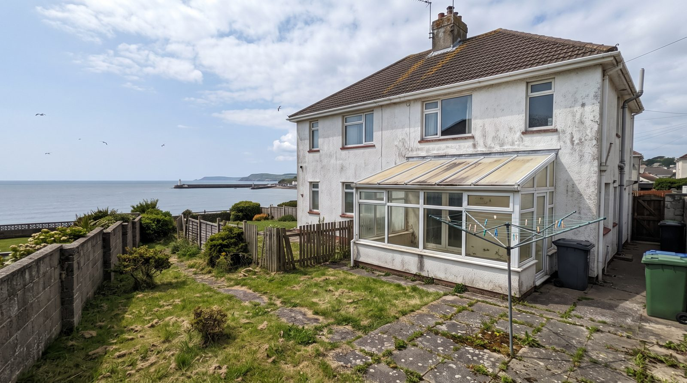
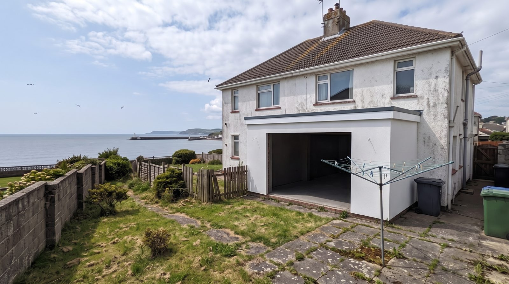
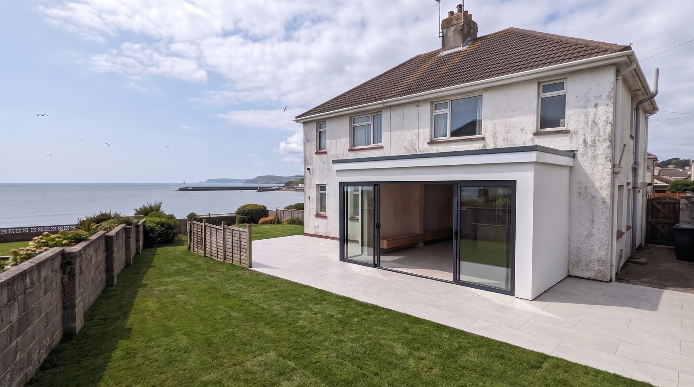

The work
Watch a whole house get its glow-up.
Every extension starts with an ordinary house and ends with the whole thing transformed — huge sliding glass, one seamless floor flowing from kitchen to patio, and the sea where it belongs: in view.


Before
After
Drag the line. Same house.

